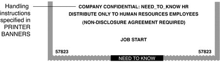
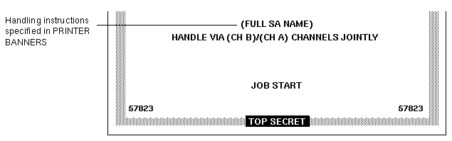

|
|||
|
1. Labels in Trusted Extensions Software 3. Making a Label Encodings File (Tasks) 4. Labeling Printer Output (Tasks) Security Text on Banner and Trailer Pages Specifying the Protect As Classification Configuring Security Text on Print Jobs (Task Map) How to Specify the Words in PRINTER BANNERS How to Specify Handling Instructions in CHANNELS How to Set a Minimum Protect As Classification 5. Customizing LOCAL DEFINITIONS 6. Example: Planning an Organization's Labels |
Specifying Printer BannersThe PRINTER BANNERS field occupies the first line or lines that can appear in the handling instructions in the lower third of the banner and trailer pages. At commercial sites, the Security Administrator role can associate any text in the PRINTER BANNERS section with any compartment bit. The compartment bit must also be assigned to a word in the SENSITIVITY LABELS section of the label_encodings file. In the following example, the printer banner is the line that reads COMPANY CONFIDENTIAL: NEED_TO_KNOW HR. Compartments from the print job's label are printed in the protect as field along with the print job's protect as classification. In the following example, the compartment HR from the label is printed as an access-related word along with the protect as classification because all compartments are treated as access-related. Figure 4-5 Commercial Use of PRINTER BANNERS on Banner PageBy convention in U.S. government installations, the printer banner line displays any warnings that are associated with the subcompartments of the job's sensitivity label. The following example shows a typical PRINTER BANNER at a government installation. Any string could be specified instead of the string that is shown here: (FULL SA NAME). Figure 4-6 Government Use of PRINTER BANNERS on Banner PageFollowing are the encodings for the printer banner line (FULL SA NAME) in Figure 4-6. First, the word (FULL SA NAME) is associated in the PRINTER BANNERS section of the label_encodings with compartment bit 2. Example 4-1 Defining Words in the PRINTER BANNERS SectionPRINTER BANNERS: WORDS: . . . name= (FULL SA NAME); compartments= 2; Example 4-2 shows the SENSITIVITY LABELS definitions for the same compartments that are used in the PRINTER BANNER definitions in Figure 4-6. In the example, compartment bit 2 is associated with the subcompartment word SA. The printer banner displays as (FULL SA NAME) because:
SENSITIVITY LABELS: WORDS: . . . name= SB; minclass= TS; compartments= 3-5; name= SA; minclass= TS; compartments= 2; For a sample PRINTER BANNERS planner, see Planning the Printer Banners in a Worksheet. |
||
|